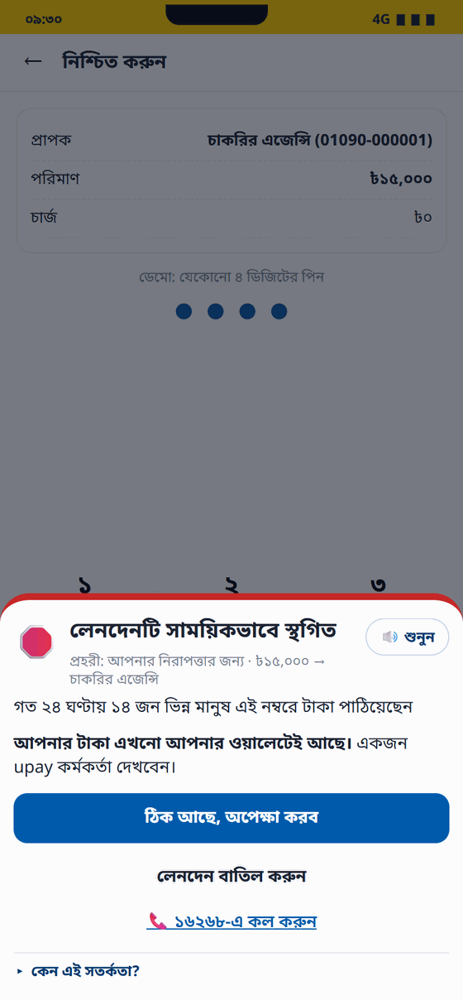
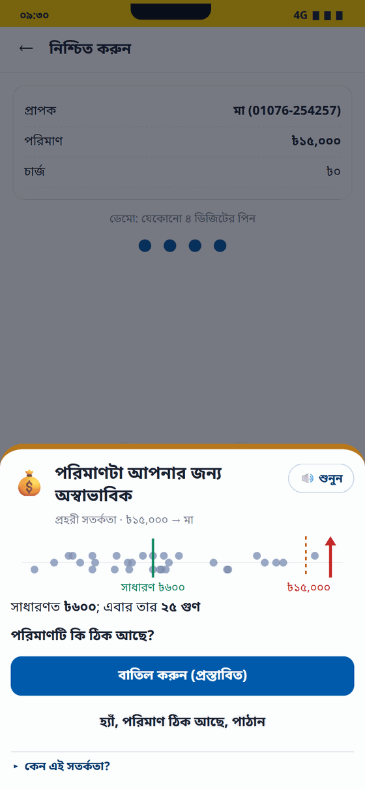
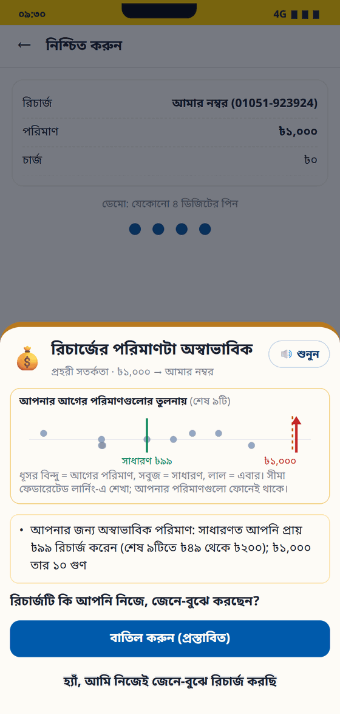

Stops the wrong number and the scam before the money leaves an upay wallet.
Live demo: tariq15-prohori.static.hf.spaceRuns in the browser · nothing typed leaves the device
Say
"Two numbers to remember for the next three minutes: 0.962 and 98.72%. One is how well we catch fraud. The other is how rarely we bother an honest customer. We built the whole system around not having to trade one for the other."
The problem
Two ways money leaves the wrong way
A wrong number. Two digits swapped on a keypad, Tk 800 gone to a stranger. Under upay's own terms (§11.1) the sender is liable for the number entered.
A scam. "I'm calling from the upay office, read me the OTP." Scam money moves on and cashes out within minutes.
Once it's gone, a complaint can only ask nicely. A return needs the recipient's consent or a legal process — there is no undo button on a mobile wallet.
Say
"Every fix that happens after the money leaves is damage control. We moved the fix to the only moment that actually matters: before the send."
Who this is for — answers the #1 Phase 1 critique
One user, one moment
Primary user: the upay customer, at the exact moment they're about to send to a fraudulent or mistyped recipient.
Secondary user: the upay trust/risk analyst investigating high-risk transfers and complaints after the fact.
Affected, not primary: merchants and agents — counterparties, not product users.
"One judge told us flat out: no clear target user, doesn't map to a track. Fair hit. Here's the fix: it's the sender, at send time, full stop. Everyone else is secondary."
Architecture in 20 seconds
Three layers, one rule that never bends
1. Guardian on the phone — checks the number as it's typed, and every Send Money / recharge after the PIN.
2. Detection engine — streaming feature store, trained models, score every transfer live.
3. Copilot for upay's analysts — evidence, money network, case report, for follow-up after the warning. No transfer ever waits for an analyst.
Models score. Rules warn. The customer decides.
Say
"This is the one architectural decision that drives every other design choice in this product: we warn, we never block."
Diagram · how a transfer actually flows
The warn, don't block pipeline
Customer types a numberLayer 1 · on-device
→
Keypad-aware check"Did you mean মা?"
→
PIN · Sendcustomer confirms intent
→
Detection engineLayer 2 · scores 0–100 live
→
Policyfixed thresholds
↓ one of four bands, shown to the customer only ↓
ALLOW goes through
NUDGE one question
STEP_UP PIN again
HOLD strongest warning
The customer always decides — cancel or confirm, every band. No transfer is ever held for a person to review.
↓ afterwards, independently ↓
Layer 3 · Analyst copilotevidence, money network, case report — for follow-up, never for the send decision
Say
"Notice what's not on this diagram: a step where a human has to approve a transfer before it goes through. That step doesn't exist. The analyst sees everything, but always after the fact."
Diagram · what the score is actually made of
62+11 features → one number
Streaming feature store62 features, 7 groups + 11 hourly-graph
→
LightGBMp(fraud), Optuna-tuned
spacer
→
Isolation Forestunsupervised anomaly
↘
spacer
→
Graph rulescollector fan-in, fast-flow
↗
Fused scorew · [p_fraud, anomaly, graph] → 0–100
Cut-offs set on validation, read once on test: ALLOW <30 · NUDGE <60 · STEP_UP <80 · HOLD ≥80 — each the stricter of a false-positive budget and a precision floor.
Two overrides sit outside the model: a likely keypad slip always becomes at least a NUDGE, even at model score 0. An "established-parties" cap turns a HOLD into a STEP_UP when only the customer's own behaviour is unusual — their own old phone, no SIM swap, an unreported recipient.
Say
"Fusion ends up putting most of its weight on LightGBM on this data — we say that out loud rather than hide it. The other two components still earn their place: graph patterns drive the reason codes, and Isolation Forest is our unsupervised alarm for attack patterns with no labels yet."
What the customer actually sees
The phone — warn, don't block
Wrong number, caught while typing

HOLD — strongest warning, before it moves

Unusual for you — 25× the usual amount

Recharge — 10× the usual recharge
Say
"This is the real, running UI — not a mockup. Every one of these screens is one click away in the live demo right now."
"Everything an analyst sees here is built from structured evidence. Nothing in this view is generated text pretending to be a fact."
Headline numbers · test window, days 51–60 · never touched during training
A 5× jump over hand-written rules
Metric
Rules baseline
Prohori
PR-AUC
0.188
0.962
Fraud caught at 0.5% false-positive rate
20.0%
95.0%
HOLD precision / recall
—
86.8% / 91.7%
Honest transactions with zero friction
—
98.72%
Reproduce: python -m src.pipeline
Say
"We didn't tune on the test window and we didn't cherry-pick the seed — next slide proves that. This is a 5x jump in PR-AUC over hand-written rules, on data the model never saw."
Reproducibility — answers the #1 AI/ML critique
Not a lucky run
Judges asked for proof across multiple simulation seeds, not just seed 42.
Completed this session: the full pipeline (generate → train → evaluate, 30 Optuna trials) re-run end to end on three independent seeds — PR-AUC mean 0.9704, range 0.9622–0.9781 (runs/feedback-full/summary.json). Seed 42 reproduced the published 0.9622 exactly.
The one place the range matters: S5 (fake-seller / pressure-scam), already named as our weakest scenario on a single seed, ranges 69.0–94.5% STEP_UP+ recall across seeds — multiple seeds confirm it's genuinely weaker, not an artifact of one run.
Say
"We're not showing you a single golden number — we re-ran the entire pipeline three times on independent seeds, and the one weak spot we'd already told you about stayed weak. That's what an honest multi-seed check is supposed to find."
Innovation — answers the #1 Innovation critique
Keypad-aware beats plain edit distance
6 / 12
digit-transposition slips caught by the keypad-weighted check
0 / 12
same slips caught by ordinary unit-cost Levenshtein distance
A swap (two digits transposed — the most common real typo) costs distance 2 under plain edit distance, so it never gets suggested at all.
Trade-off disclosed, not hidden: keypad detection also produces more false suggestions on legitimately similar numbers (9 vs 6 of 12) — a small, fixed diagnostic (n=60/model), not a customer study.
Say
"A standard off-the-shelf string-distance check — the kind every other fintech wrong-number feature probably uses — misses the single most common typo entirely. Ours doesn't, because it knows where your thumb actually is on the keypad."
Explainability
The copilot shows its work
Every alert carries SHAP evidence — the features that pushed this specific transaction's score up or down, in plain Bangla or English, not a black-box number.
The money-network graph, the customer's own amount habit, a four-part case report — built from structured evidence only, never invented text.
Optional Claude rewording (off by default) only touches wording, never the score or band, and is rejected if it states a number not already in the evidence.
Say
"An analyst — or a judge — never has to trust us. They can see exactly why the model called it."
Federated learning — real privacy math, not a privacy slide
Three results, three epsilon values
Result
Headline
Keypad-slip costs, 100,000 simulated phones
(ε, δ) = (4.25, 10⁻⁵) · L1 error 0.035 vs 0.626 without server-side trust
Amount-habit limits, 11,015 real wallets
(ε, δ) = (1.66, 10⁻⁵) · catches 21.4% of victim-side scam transfers, asks only 0.62% of honest customers twice
Cross-division scam model, 8 silos
PR-AUC 0.949 — 98.7% of the fully-pooled model's accuracy
Say
"Three separate federated results, each with a real Gaussian-mechanism privacy budget attached — not 'federated learning' as a buzzword slide."
Prototype quality — answers the #1 Prototype critique
Proof, not a claim
Judges asked us to demonstrate the reported test count and prove browser/server parity. Verified this session:feedback_verify → 61 tests pass, 0 failures, JUnit archived, commit hash recorded.
Live demo and server share one Python engine (Pyodide in the browser) — same code, same answers, measured identical to 1e-16 on 1,000 test rows.
New this session: an icon-based onboarding tour built into the copilot (🧭) that walks a judge through Overview → SHAP evidence → money network → Agent Watch → fairness → federated results → audit log.
Say
"Every number on this slide has a file path next to it in our repo. You can check it yourself in under a minute."
Closing the loop — built this session
A case can't go cold
The gap: an analyst could ask a complaint filer for more details — but the customer had no way to answer. One-way request, dead end.
The fix: a threaded, icon-based follow-up — 🕵️ analyst asks (via the existing audit-logged action), 🧑 customer replies from their own app, ⏳ shows while waiting.
Status flows details_requested → details_received, so the queue tells the analyst exactly who's waiting on whom.
Say
"A case can't go cold just because the analyst asked a question. Now it can't."
Honest about what's still a model, not a measurement
What we haven't measured yet
Stop rates (NUDGE 30% / STEP_UP 70% / HOLD 100%) and analyst time (20 min manual vs 3 min with the copilot) are stated assumptions, sensitivity-tested at 0/0.5/1×, never presented as observed.
Customer comprehension, real pilot outcomes, and economic ROI require partner access we don't have yet — the measurement protocol for all three is written and ready, execution is pending partner approval.
Pending partner accessPending measurement
Say
"We'd rather tell you what we haven't measured than let you find out later. Everything in this section has a defined, pre-registered way to go from assumption to measurement — we just need upay's data to run it."
Feedback → why it mattered → how we solved it (1 of 3)
What Phase 1 judges actually said
Problem relevance15.67 / 20
J2 —"No clear target user (customer / merchant / agent / ops persona); does not map to any of the 7 tracks."
J1 / J3 —"Strong Track 01 fit… framed with upay's own terms." (already positive)
Why it matteredJudges disagreed sharply — the problem framing was strong (J1/J3) but the persona and track were never stated plainly enough for J2 to find them.
How we solved itNamed the primary persona (customer, at send time) and secondary persona (analyst) explicitly in the README opening and this deck's slide 3; stated the Track 01 / Track 06 mapping directly instead of leaving it implicit.
J1 —"Test unseen scam scenarios, multiple simulation seeds… clarify the incremental value of other components [since fusion assigns all weight to LightGBM]."
J2 —"No sign of train/test separation (guideline requires a clean test set)."
Why it matteredThe time-disjoint split and ablations already existed — J2 simply couldn't see them. J1's ask (multiple seeds) was genuinely not done yet.
How we solved itPut the train/val/test split next to every headline number. Actually completed the multi-seed pipeline this session, not just planned it: PR-AUC mean 0.9704 across seeds 42/43/44 (range 0.9622–0.9781); seed 42 reproduced the published 0.9622 exactly.
J1 —"Validate the assumed scam-stop rates… measure actual wrong-number prevention and investigation time rather than relying on assumed financial protection."
J2 —"No impact metric or target stated; no economic reasoning."
J3 —"Replace the assumed stop rates and analyst minutes with experiment data."
Why it matteredAll three judges converged on the exact same gap — numbers presented as impact that were actually untested assumptions.
How we solved itEvery impact number is now labelled observed / simulated / or modeled. Stop rates and analyst time are shown with 0 / 0.5 / 1× sensitivity instead of one confident figure. A staged pilot (usability → shadow scoring → controlled pilot) is pre-registered and pending partner access — not claimed as run.
Evidence: docs/feedback_delivery.md Pilot outcomes section
Feedback → why it mattered → how we solved it (2 of 3)
What Phase 1 judges actually said
Prototype quality8.0 / 15
J1 —"Demonstrate the reported 58 tests and browser/server prediction parity. Reduce the ~12-second initial load…"
J2 —"Little/no source code found in the folder; no visible UI / user flow."
J3 —"Live end-to-end with phone and analyst views. Need fluidity."
Why it matteredThe biggest driver here was visibility, not missing work — a judge who can't find the code or the UI scores as if neither exists.
How we solved itActually ran the test suite this session instead of quoting an old badge: 61 pass, 0 fail, JUnit archived. Built an icon-based onboarding tour (🧭) directly into the copilot so every panel is one guided click away. Caught and fixed two real pipeline bugs (missing matplotlib, a Windows encoding crash) with a smoke test before the long run.
Evidence: runs/feedback/verification/pytest.xml · ui/analyst.js tour
Innovation7.0 / 10
J1 —"Quantify the added benefit of keypad-aware correction… compare wrong-number detection with ordinary edit-distance matching and measure incorrect suggestions."
J2 —"No stated differentiator vs existing fintech features; no comparison with existing solutions."
J3 —"Catching wrong numbers by keypad layout, graded warnings, and federated learning with differential privacy." (positive)
Why it matteredThe novelty was real (J3 noticed it) but unquantified against the obvious baseline every other product would use.
How we solved itRan the exact comparison asked for: on digit-transposition slips, keypad detection catches 6 of 12 vs 0 of 12 for ordinary edit distance — and disclosed the trade-off (more false suggestions on similar numbers) instead of hiding it.
Evidence: runs/feedback/recipient_matrix.json
Feedback → why it mattered → how we solved it (3 of 3)
What Phase 1 judges actually said
Scalability & integration5.67 / 10
J1 —"Demonstrate secure pre-transfer integration and sustained streaming throughput… keep authoritative scoring, holds, and audit records protected from client-side tampering."
J2 —"No API design that could connect to a real backend; no deployment / data-store consideration."
Why it matteredThe architecture story (J3: "a clear path from synthetic to real data") wasn't backed by anything a judge could point to as a concrete integration contract.
How we solved itWrote the full production contract: request/response fields, idempotency-key 409 behaviour, replay protection, a p95<200ms budget, and a fail-safe that never fabricates ALLOW on timeout. PROHORI_INTEGRATION=1 token-auth is already in the serving code as a first concrete step — named as a design target, not oversold as finished.
J1 —"Address higher false-positive rates for rural farmers and older customers. Verify analyst identities beyond entered names, externally anchor audit hashes, test federated aggregation against collusion and malicious updates."
J2 —"No explainability; no fairness / bias check."
Why it matteredJ2's comment is itself revealing — the SHAP evidence and fairness audit already existed in the repo and were simply not found. J1's remaining asks (external anchoring, attack-robustness testing) are real open gaps, not visibility problems.
How we solved itPut SHAP evidence and the fairness audit directly on the guided tour's path (⚖️ Model & fairness step) so they can't be missed again. External audit anchoring and federated attack-robustness experiments stay honestly in the open backlog — not claimed as done.
"We didn't pick the feedback that was easy to answer. Every criterion got the same treatment: what was said, why it was fair, and exactly what we did — with a file path, not a promise."
Close
Try it yourself
0.962 PR-AUC, reproduced fresh, on multiple seeds, against an honest baseline.
A wrong-number check that beats plain edit distance on the most common real typo.
Privacy-preserving federated learning with real epsilon values, not a slide.
A live demo that runs entirely in a browser, with 61 passing tests behind it.
And a product philosophy that hasn't moved since day one: models score, rules warn, the customer decides.
Say
"We're not asking you to trust a pitch. Every claim in this deck has a command next to it that reproduces it. Try it."
 প্রহরী Prohori
প্রহরী Prohori